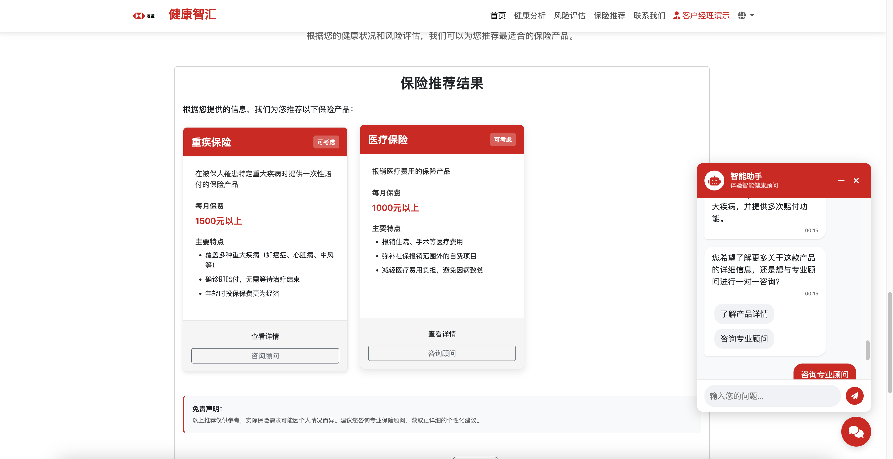
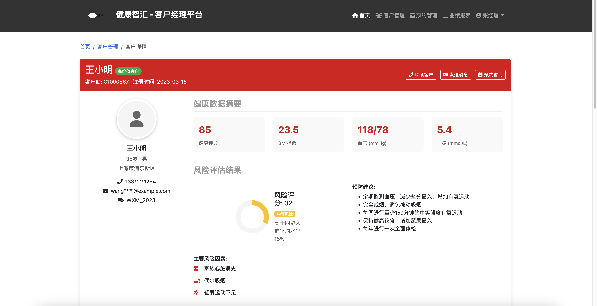
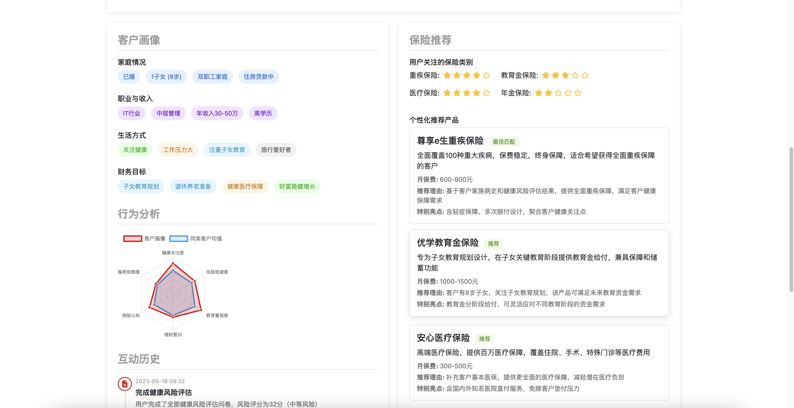

健康智汇 (Health Smart Hub)

智能健康与财富规划平台
利用生成式人工智能技术，重塑保险客户体验与业务流程
本文档及DEMO由ChatGPT o3-mini, Claude 3.7 sonnet, Deepseek-r1, Grok3, Cursor协作完成。
演示图片来自Pexels Chevanon Photography[https://www.pexels.com/zh-cn/photo/317157/]
📋 目录
🌟 项目概述
健康智汇是一个创新的智能健康与财富规划平台，通过生成式AI技术深度整合健康管理与保险服务，为客户提供个性化的健康分析、风险评估和保险推荐。该平台不仅能够帮助客户更好地了解和管理自身健康状况，还能根据客户的健康数据和生活习惯，提供精准的保险产品推荐，实现健康管理与财富规划的无缝衔接。
战略契合点
- 客户中心战略：通过AI驱动的个性化服务，提升客户体验和满意度
- 数字化转型：利用先进AI技术，推动保险业务流程的数字化和智能化
- 健康生态系统：构建健康管理与保险服务的生态闭环，增强客户粘性
- 数据驱动决策：基于客户健康数据，实现精准营销和产品推荐
💡 核心功能
1. AI驱动的健康数据分析
- 功能描述：根据客户上传的体检报告或手动输入的健康数据（如年龄、BMI、血压、血糖等），利用生成式AI技术提供个性化的健康建议，包括饮食调整、运动计划和生活习惯改善。
- GenAI应用：使用大语言模型(LLM)分析体检报告文本，提取关键健康指标，并生成个性化健康建议。
- 技术亮点：
- 支持OCR识别上传的体检报告图片/PDF
- 利用RAG技术关联专业医学知识库
- 多模态分析能力，整合文本、图像和结构化数据
2. 智能健康风险评估
- 功能描述：分析客户的健康数据和生活习惯，评估潜在的健康风险，并提供相应的预防建议。系统还能生成具有社交属性的分享卡片，鼓励用户分享健康成果。
- GenAI应用：使用AI模型预测健康风险，并生成个性化的预防建议和视觉吸引力强的分享内容。
- 技术亮点：
- 基于机器学习的健康风险预测模型
- 智能生成社交媒体友好的分享卡片
- 根据用户年龄段和偏好自动调整内容风格
3. 个性化保险产品推荐

- 功能描述：根据客户的人生阶段、财务目标和健康状况，推荐最适合的保险产品组合。
- GenAI应用：利用RAG技术关联产品目录，基于客户画像生成个性化保险方案。
- 技术亮点：
- 多维度客户画像构建
- 基于健康风险的保险需求预测
- 动态保险组合优化算法
4. 智能客户顾问对话系统
- 功能描述：通过自然语言对话界面，引导客户完成健康评估和保险咨询全流程，提供24/7的即时响应。
- GenAI应用：基于大语言模型的对话系统，能够理解客户意图，提供专业咨询。
- 技术亮点：
- 多轮对话管理
- 情感分析与个性化回应
- 无缝衔接人工客服
5. 客户经理智能仪表盘


- 功能描述：为保险客户经理提供全面的客户管理工具，整合客户健康数据、风险评估结果和保险需求，支持精准销售和服务。
- GenAI应用：利用AI技术自动生成客户侧写、销售建议和跟进策略，提升客户经理工作效率。
- 技术亮点：
- 客户360°视图，全面展示客户健康和财务状况
- AI驱动的销售机会识别和优先级排序
- 智能会话脚本生成，根据客户特征提供个性化沟通建议
- 自动化客户跟进提醒和行动建议
- 与MCP系统无缝集成，实现数据自动录入
6. 体检历史管理与健康趋势分析
💼 商业价值
1. 提升客户获取与转化
- 数字化获客渠道：通过健康管理入口吸引潜在客户，降低获客成本
- 转化率提升：个性化保险推荐提高产品转化率，预计提升25-30%
- 客户细分：基于健康数据和风险评估，实现精准客户细分，优化营销策略
2. 增强客户体验与粘性
- 个性化服务：AI驱动的个性化健康建议和保险推荐，提升客户满意度
- 自助服务：24/7全天候智能顾问服务，减少等待时间
- 健康生态：构建健康管理与保险服务的闭环生态，增强客户粘性
3. 优化业务运营效率
- 销售流程自动化：减少人工干预，提高销售效率
- 智能核保：基于健康数据的智能风险评估，优化核保流程
- 降低运营成本：AI自动化减少人工成本，预计节省15-20%运营支出
- 提升客户经理效能：智能仪表盘提供销售线索优先级和个性化沟通建议，提高客户经理工作效率达50%
4. 数据驱动的产品创新
- 客户洞察：从健康数据中获取深度客户洞察，指导产品创新
- 风险定价优化：基于健康风险评估，实现更精准的风险定价
- 个性化产品设计：根据客户需求和健康状况，开发定制化保险产品
🔧 技术实现
技术架构
- AI模型：大型语言模型(LLM)、RAG检索增强生成、MCP模型上下文协议
- 数据处理：OCR文本识别、自然语言处理(NLP)
- 安全与合规：数据加密、隐私保护、合规审计
关键AI技术应用
-
文档理解与信息提取
- 利用OCR和NLP技术从体检报告中提取结构化健康数据
- 应用场景：自动解析体检报告，提取关键健康指标
-
检索增强生成(RAG)
- 结合专业医学知识库和保险产品库，生成准确的健康建议和保险推荐
- 应用场景：个性化健康建议、保险产品匹配
-
多模态交互
- 整合文本、图像和结构化数据的分析能力
- 应用场景：体检报告解析、健康风险可视化
-
对话式AI
- 基于大语言模型的自然对话系统
- 应用场景：智能客户顾问、引导式健康评估
📊 业务成果
预期量化成果
| 业务指标 |
预期改善 |
实现方式 |
| 客户获取成本 |
降低30% |
通过健康管理入口吸引潜在客户 |
| 产品转化率 |
提升25-30% |
个性化保险推荐 |
| 客户满意度 |
提升40% |
AI驱动的个性化服务体验 |
| 运营成本 |
降低15-20% |
销售和服务流程自动化 |
| 客户留存率 |
提升35% |
健康管理与保险服务的生态闭环 |
| 交叉销售率 |
提升45% |
基于健康数据的精准产品推荐 |
| 客户经理效能 |
提升50% |
智能仪表盘提供的销售线索优先级和沟通建议 |
非量化成果
- 品牌形象提升：展示汇丰保险在数字创新领域的领导地位
- 数据资产积累：构建健康数据库，为未来产品创新提供基础
- 生态系统扩展：为与医疗机构、健康服务提供商的合作奠定基础
- 市场差异化：通过AI驱动的健康管理服务，实现市场差异化竞争
🚀 未来发展
近期规划（6-12个月）
- 健康数据整合：与更多医疗机构和健康设备厂商合作，扩展数据来源
- AI模型优化：基于用户反馈，持续优化健康风险评估和保险推荐算法
- 多语言支持：扩展支持更多语言，满足全球市场需求
中长期规划（1-3年）
- 生态系统扩展：整合更多健康服务提供商，构建完整健康生态
- 高级分析功能：引入预测性健康分析，提前预警潜在健康风险
- 个性化保险产品：基于平台数据，开发定制化保险产品
- 国际市场拓展：将平台模式复制到其他国家和地区
📝 结论
健康智汇平台通过生成式AI技术，实现了健康管理与保险服务的深度融合，为客户提供全方位的健康与财富规划解决方案。该平台不仅能够帮助汇丰保险提升客户体验、优化业务流程、降低运营成本，还能通过数据驱动的方式，推动产品创新和市场差异化，为公司在数字化转型浪潮中赢得竞争优势。
通过将GenAI技术应用于保险特定场景，健康智汇平台完美契合汇丰保险的战略优先事项，创造明确的商业价值，并支持关键业务成果的实现。这一创新解决方案代表了保险行业数字化转型的未来方向，展示了汇丰保险在科技创新领域的领导地位。
🔗 在线演示
您可以通过以下链接访问我们的在线演示：
- 用户端主页 - 体验健康智汇平台的用户界面，包括健康数据分析、风险评估和保险推荐功能
- 体检历史管理 - 查看体检历史记录管理和健康趋势分析功能
- 客户经理仪表盘 - 体验专为保险客户经理设计的智能仪表盘
注：以上演示链接仅供展示。
本文档及DEMO由ChatGPT o3-mini, Claude 3.7 sonnet, Deepseek-r1, Grok3, Cursor协作完成。
图片来自Pexels Chevanon Photography[https://www.pexels.com/zh-cn/photo/317157/]